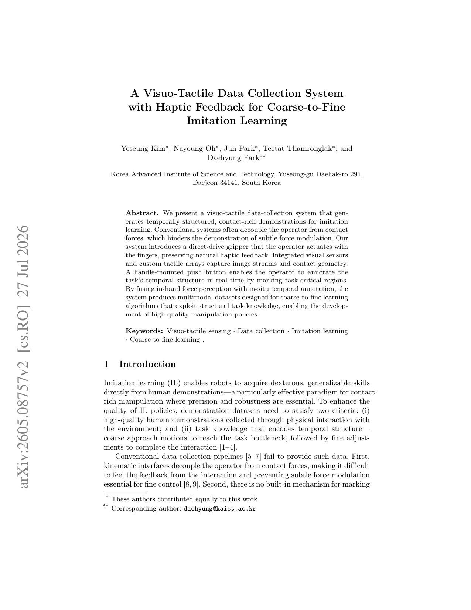

A Visuo-Tactile Data Collection System with Haptic Feedback for Coarse-to-Fine Imitation Learning
Korea Advanced Institute of Science and Technology (KAIST)
arXiv preprint arXiv:2605.08757 (2026)

Abstract
We present a visuo-tactile data-collection system that generates temporally structured, contact-rich demonstrations for imitation learning. Conventional systems often decouple the operator from contact forces, which hinders the demonstration of subtle force modulation. Our system introduces a direct-drive gripper that the operator actuates with the fingers, preserving natural haptic feedback. Integrated visual sensors and custom tactile arrays capture image streams and contact geometry. A handle-mounted push button enables the operator to annotate the task’s temporal structure in real time by marking task-critical regions. By fusing in-hand force perception with in-situ temporal annotation, the system produces multimodal datasets designed for coarse-to-fine learning algorithms that exploit structural task knowledge, enabling the development of high-quality manipulation policies.